MusicFest has filled Willow Waterhole with free concerts, food, and community since 2012. It is what Levitt Pavilion Houston is being built to become.
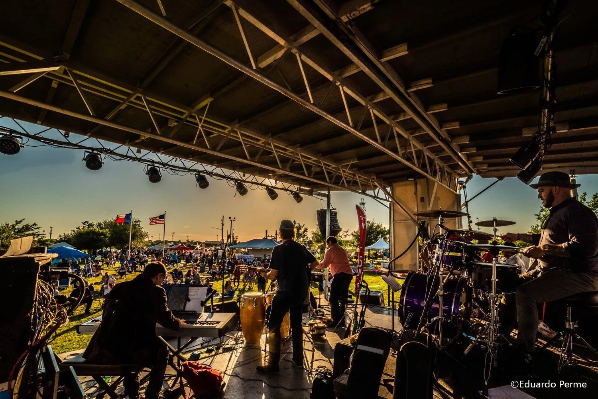
MusicFest at Willow Waterhole Greenway. Photo: © Eduardo Perme.
MusicFest has brought free live music to Willow Waterhole since 2012, filling the greenway with student musicians, professional artists, food, and neighbors gathered around the stage. It is the community foundation Levitt Pavilion Houston is being built on, and it points directly to what the pavilion will become.
From the earliest Sunday-in-the-park concerts to MusicFest today, each year has left its own poster. Together they tell the story that made Levitt Houston possible.
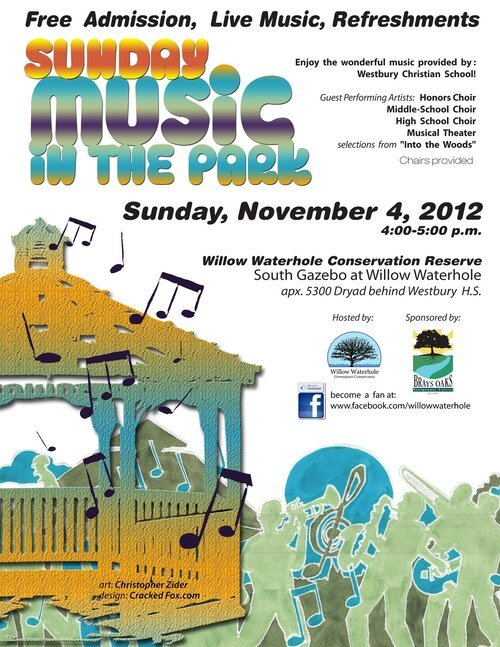
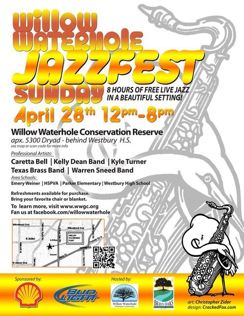
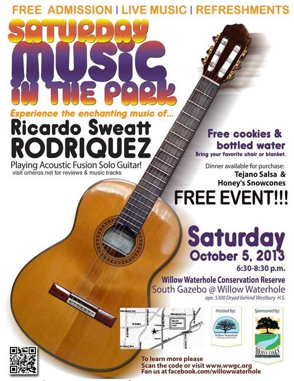
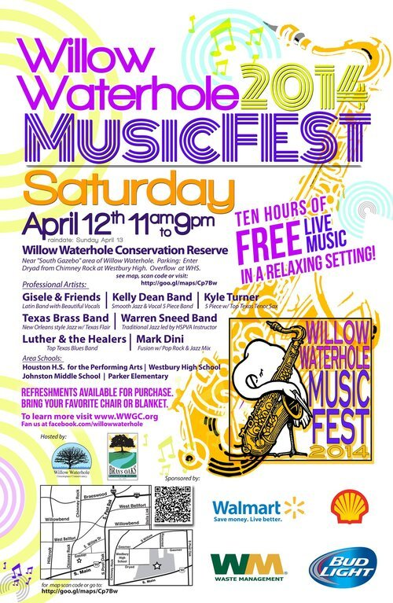
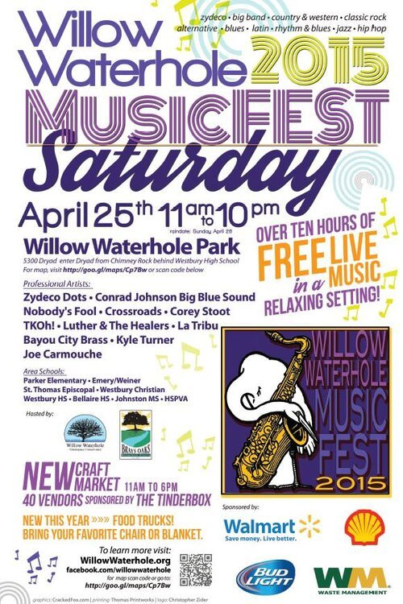
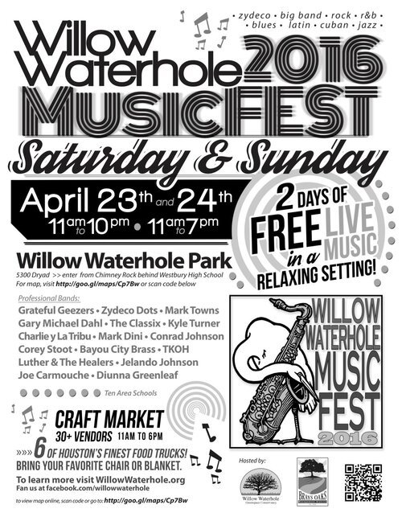
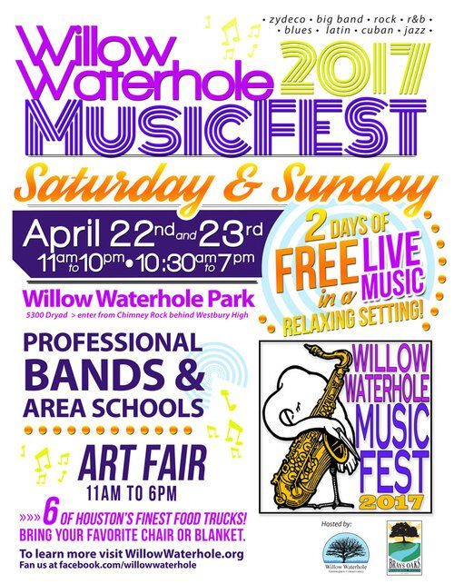
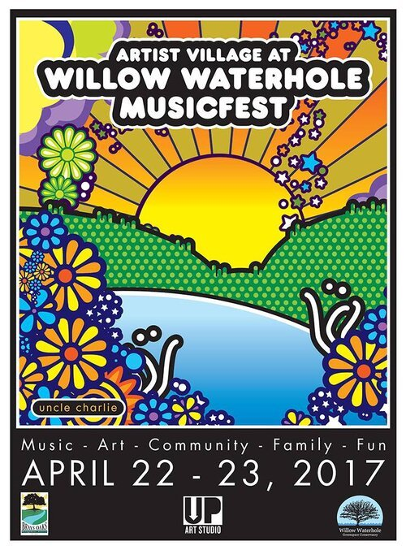
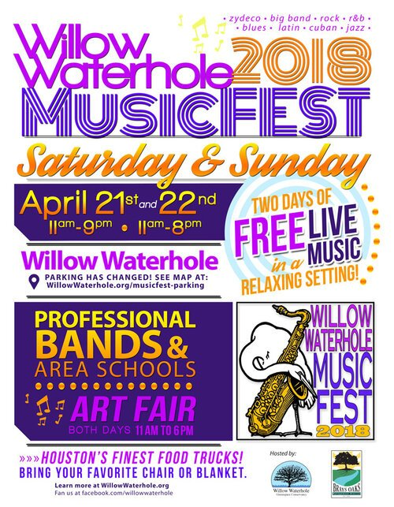
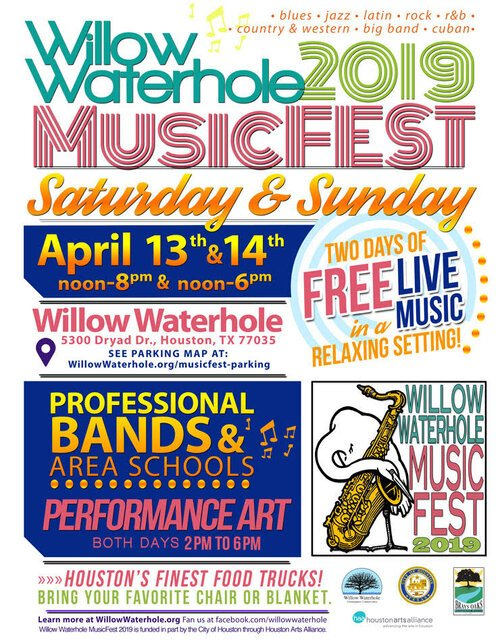
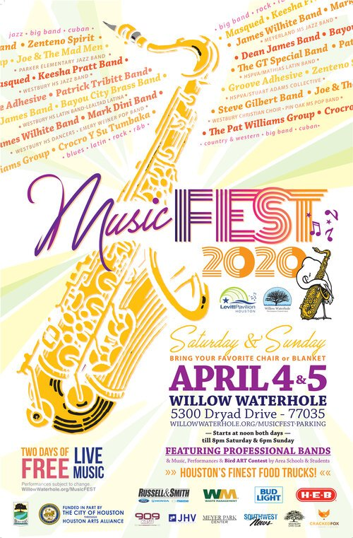
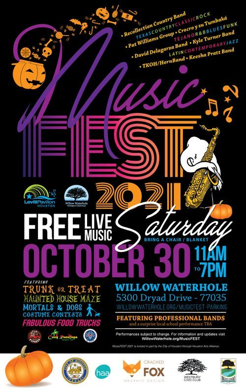
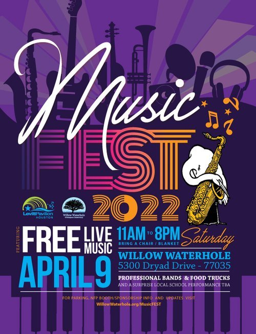
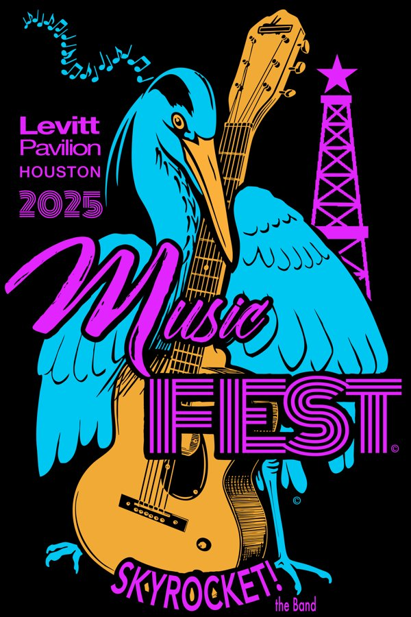
Posters courtesy of Friends of Levitt Pavilion Houston.
Join our email list for future concert and MusicFest announcements.